Mobilité, liberté
Bouger, se déplacer, voyager… Acquise au fur et à mesure de l’évolution et de la démocratisation des transports,
la mobilité est une liberté dont personne ne voudrait être privé.
Récemment, la hausse du prix du carburant amène les Français à se poser la question de leurs déplacements :
sommes-nous prêts à nous passer d’une voiture individuelle, si pratique ?
Alors que 89% des Parisiens affirment avoir le choix entre plusieurs moyens de transport selon l’INSEE,
on constate effectivement que l’usage de la voiture est à la marge de celui des transports en communs.
Avec le taux d’équipement le plus faible de France (37,6% contre 86% en Pays de la Loire), uniquement 13% de Parisiens se rendent au travail en voiture.
Dans une ville qui laisse de plus en plus de place aux autres modes de transport, il semble légitime de se poser la question de l’avenir de la voiture à Paris.
Et pour mieux l’anticiper, nous proposons de nous intéresser à son évolution sur les dernières années, tout en y intégrant la notion de la pollution de l’air.
En effet, n’oublions pas que la pollution entraîne en France 48 000 décès par an.
Taux d'équipement en voiture personnelle
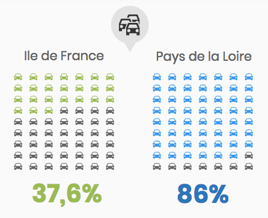
source:INSEE
MOINS DE VOITURES CIRCULENT A PARIS EN 2017 QU’EN 2014
Après une augmentation continue du débit routier depuis 2013, celui-ci chute brutalement en 2017.
Les voies sur berge ont été officiellement rendue piétonnes cette même année. Faut-il y voir une causalité par effet de découragement ?
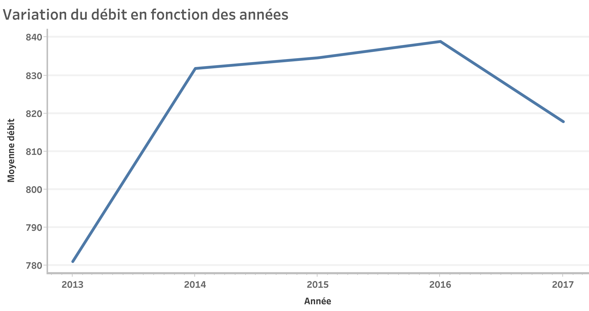
...Et le trafic est donc un peu moins dense
Contrairement aux idées reçues, le trafic routier est moins dense en 2017 qu’en 2016. La piétonnisation de certains axes n’a donc pas créé d’embouteillages supplémentaires aux moyennes des années précédentes.
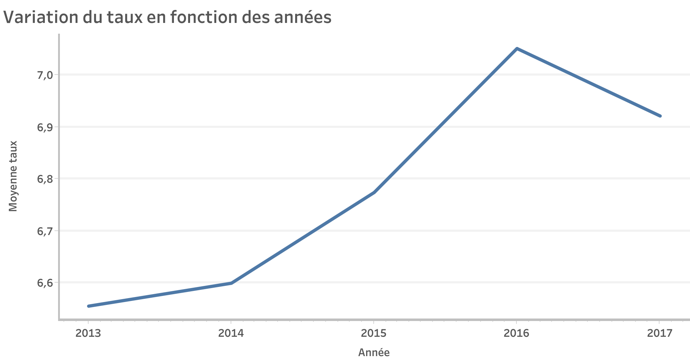
malgré cela, respirer l'air parisien c'est équivalent à fumer 15 cigarettes par mois...
C'est toujours mieux qu'à Pékin... Mais on peut faire mieux, non?
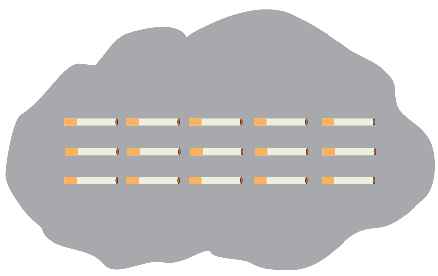
VIVRE À PARIS
15 CIGARETTES / MOIS
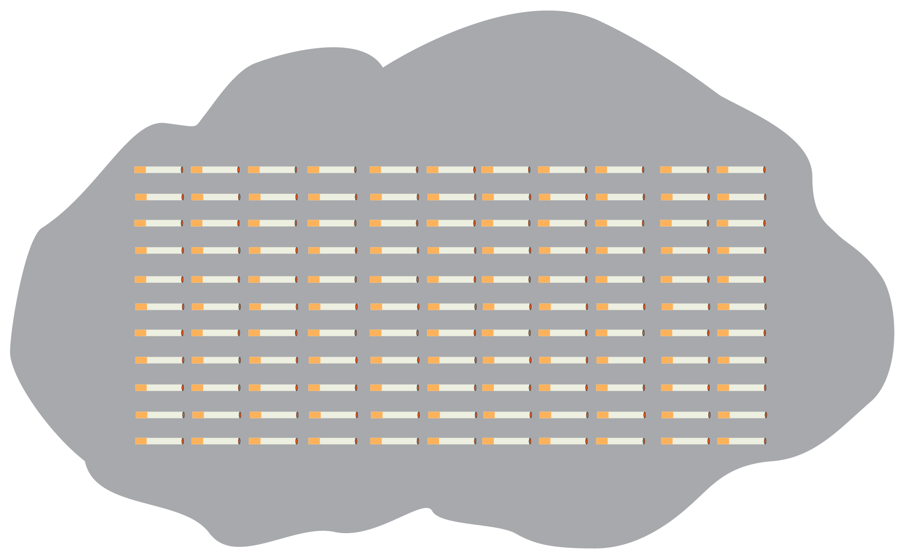
VIVRE À PEKIN
121 CIGARETTES / MOIS
L’ONG européenne Transport et Environnement a relevé les indices de pollution aux particules fines à Paris en août 2018
et les a converti en équivalents cigarette selon la méthode de l’organisation Berkeley Earth.
Selon cette méthode, respirer 22 microgrammes/m3 de particules fines produit les mêmes effets sur les poumons que le tabagisme.
QUELS SONT LES PRINCIPAUX POLLUANTS GÉNÉRÉS PAR LE TRAFIC ?
Dioxyde d'Azote
NO2
En tant que « polluant toxique » et parce qu'il est l'un des polluants majeurs à Paris, le dioxyde d'azote fait l'objet d'un suivi obligatoire
par les observatoires de la pollution de l'air. En France, sa valeur limite horaire est de 200 µg/m3, fréquemment dépassée dans les grandes villes
et près des grands axes routiers ou aéroports en l'absence de vent ou de circulation de l'air.
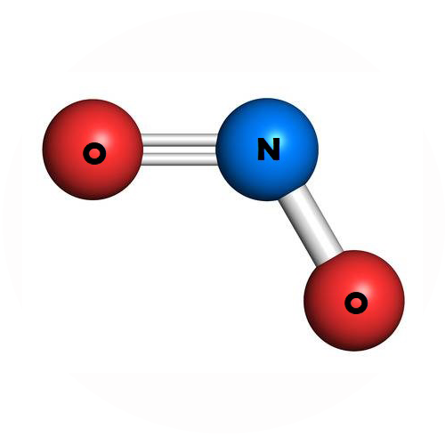
Particules fines
PM10 & PM2.5
Outre les gaz, l'atmosphère contient des matières en suspension que l'on regroupe sous le terme général de "particules fines".
Ces poussières sont souvent issues de combustions incomplètes.
Les particules fines pénètrent en profondeur dans les poumons. Elles peuvent être à l’origine d’inflammations,
et de l’aggravation de maladies cardiaques et pulmonaires. De plus, elles peuvent transporter des composés cancérigènes
absorbés sur leur surface jusque dans les poumons.
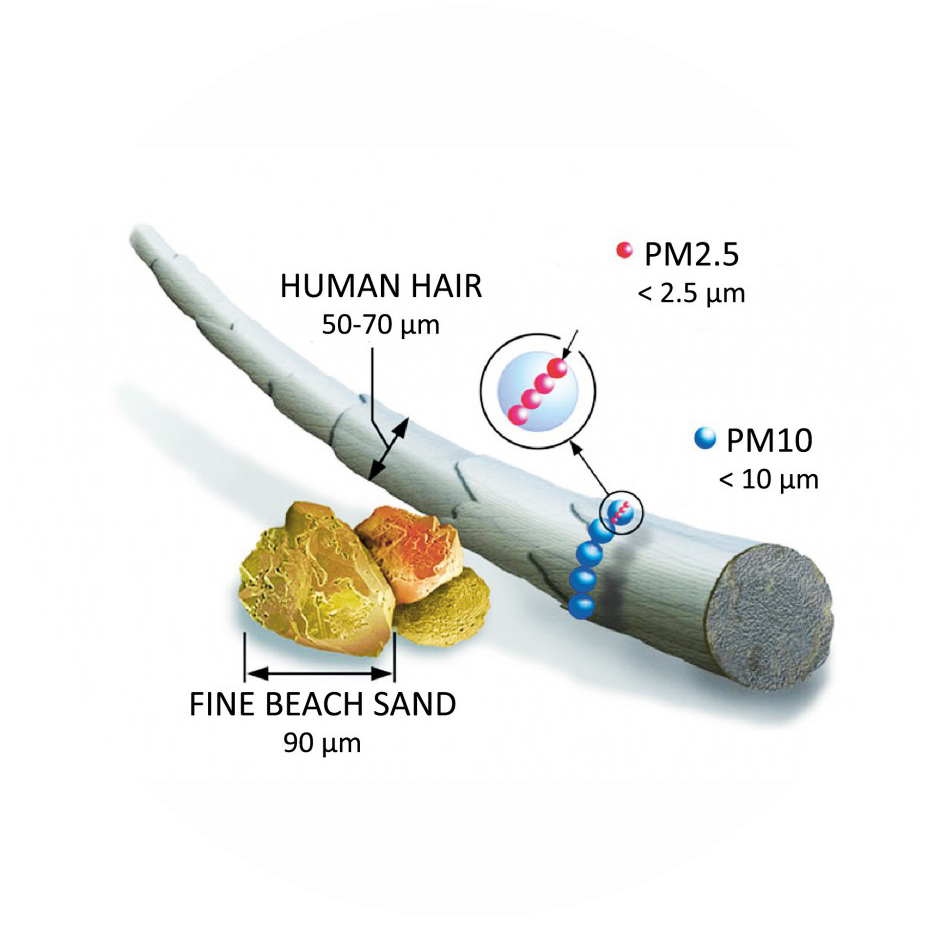
Comment se positionne-t-on par rapport au reste des villes?
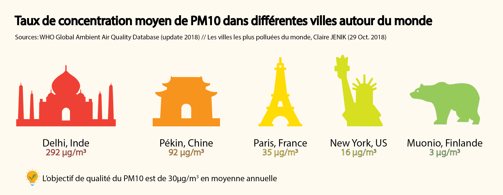
Comment la qualité de l'air évolue-t-elle depuis 5 ans?
La pollution aux particules fines recule depuis 2013, et cela malgré l’augmentation continue du trafic routier jusqu’à 2016...
Comment est-ce possible ?
Le niveau de NO2 reste cependant très préoccupant, malgré sa légère diminution.
D'où vient cette pollution?
En fait, les particules fines ne sont pas essentiellement générées par les moteurs,
mais par le frottement des pneus et des plaquettes de freins. Ceci explique que les axes les plus encombrés
soient les plus pollués ! En fait, ce sont les embouteillages qui provoquent plus de pollution.
L’adoption de véhicules électriques n’est donc pas une solution miracle !

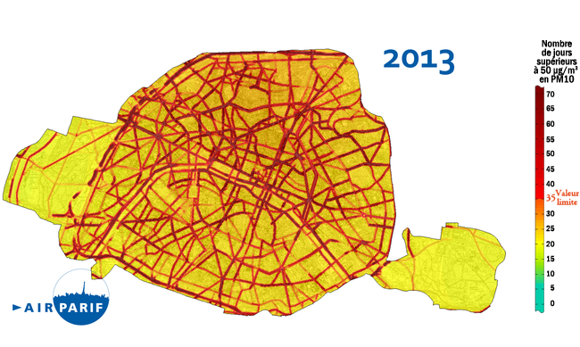
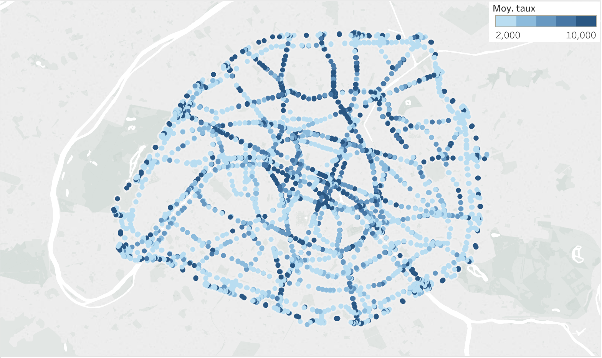
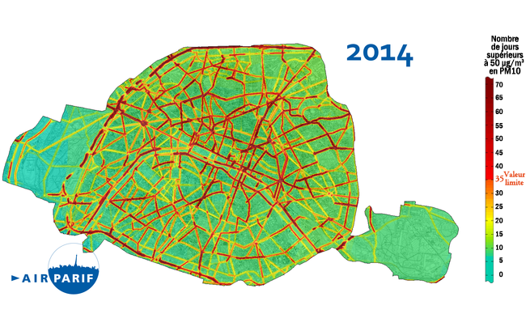
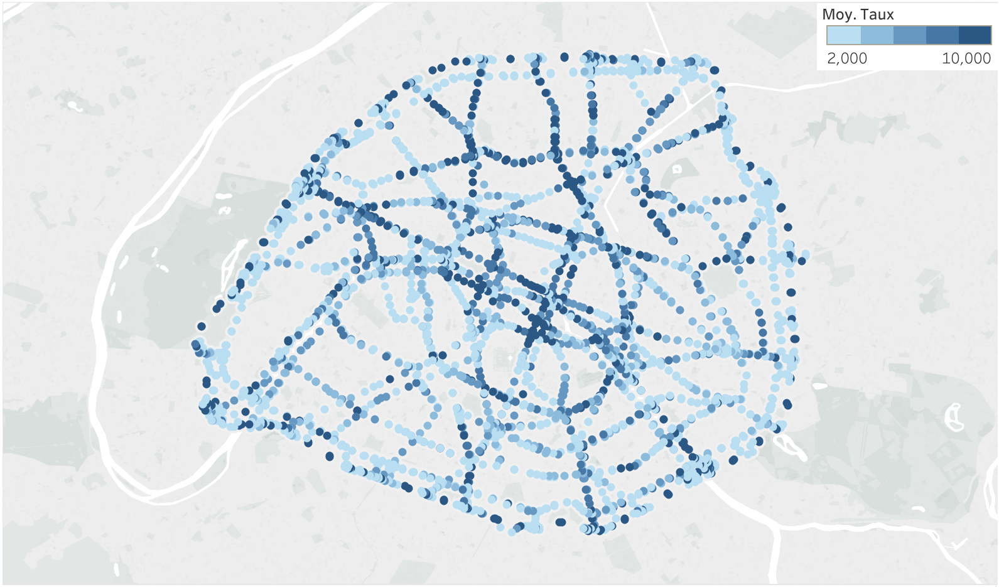
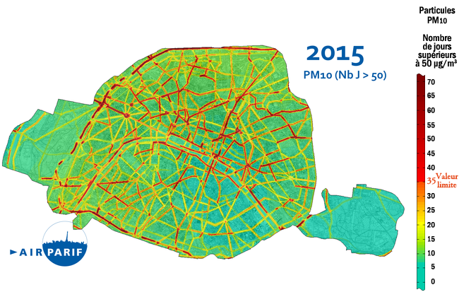
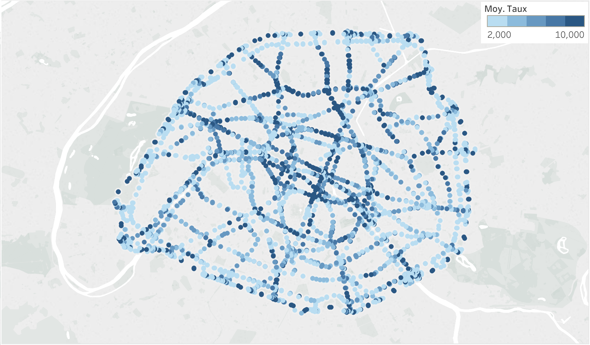
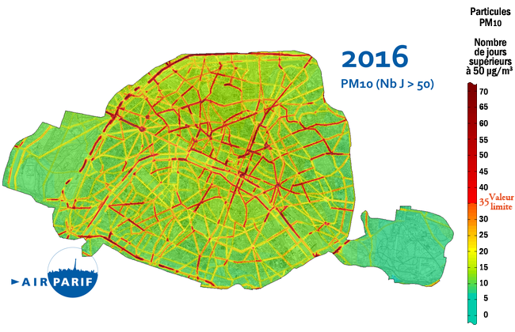
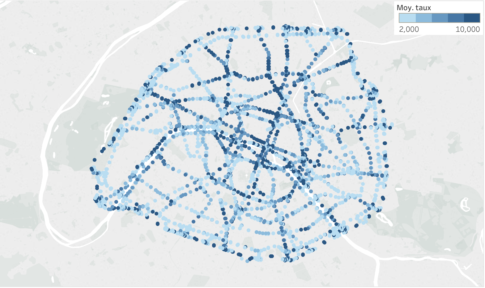
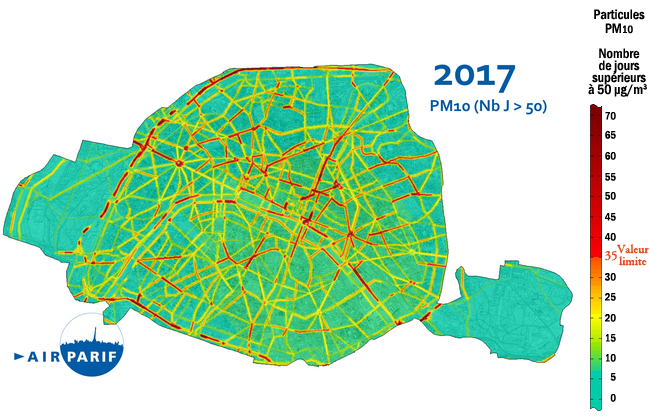
QUELLE RÉALITÉ SE CACHE DERRIÈRE LES EMBOUTEILLAGES ?
Très concrètement, il s’agit en grande partie de personnes qui utilisent leur voiture pour se rendre au travail.
Cela explique pourquoi le trafic chute radicalement les week-ends et en été.
Quelles alternatives pourrions-nous leur proposer pour diminuer le trafic et les aider à économiser en carburant tout en préservant notre atmosphère ?
PLUS DE TRANSPORTS EN COMMUN POUR MOINS D’EMBOUTEILLAGES ?
Dans le récent classement Greenpeace Mobilités Durables (2018), Paris se hisse à la 7ème place.
Loin derrière les exemples nordiques, Paris dépasse cependant Berlin et Londres. Ce classement se base sur cinq critères :
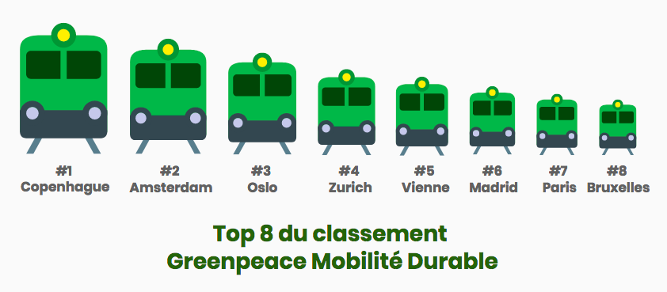
PARIS BIEN PLACÉE SUR LA MOBILITÉ ALTERNATIVE A LA VOITURE
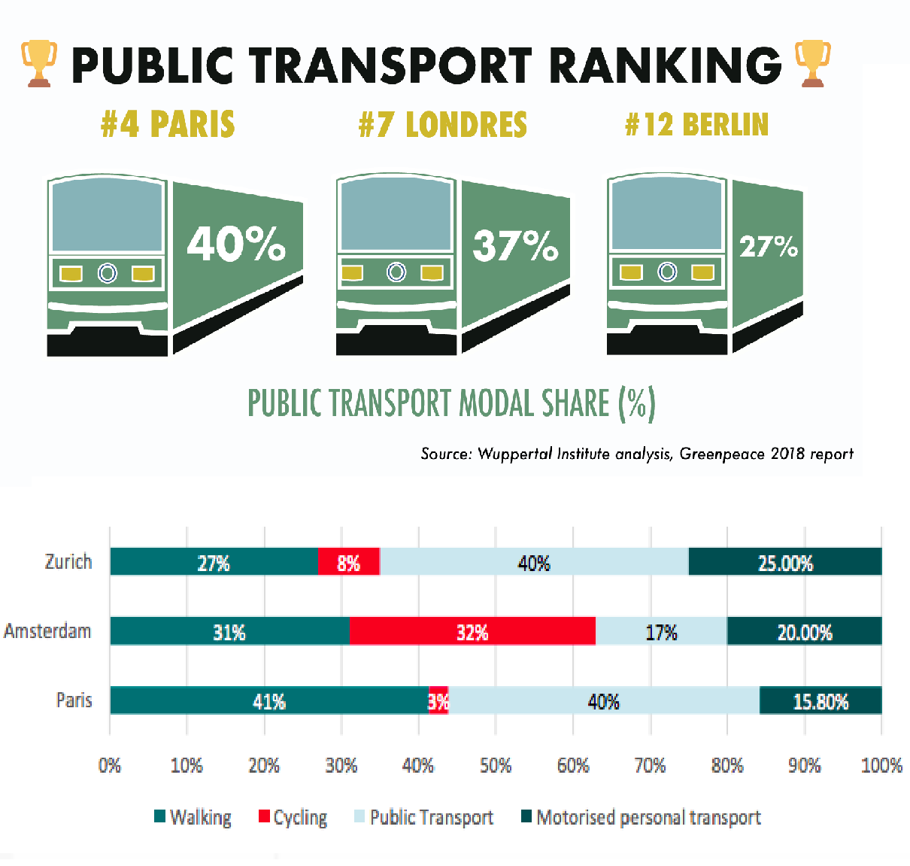
Un des critères de ce classement est l’analyse de la mobilité des habitants de la ville.
Comparée à ses voisines européennes, Paris n’est pas une si mauvaise élève puisqu’elle arrive en 4eme position
sur la qualité de son réseau de transports en commun (img 1). 40% des parisiens utilisent les transports en commun,
et le 1er moyen de transport le plus utilisé est la marche à pieds (img 2) !
Une statistique qui dépasse de loin toutes les villes sondées, mais qui illustre un gros retard sur l’usage du vélo (3%).
TRANSPORTS PUBLICS + RESTRICTION DE CIRCULATION
L’ÉQUATION GAGNANTE ?
La vignette Crit’air est obligatoire dans plusieurs grandes villes depuis 2017.
Cette dernière classe les véhicules en six catégories selon leurs émissions polluantes.
Lors des pics de pollution, les véhicules diesel construits avant 2005 (Crit’air 4 et 5) se voient interdits de circulation.
Et Paris va plus loin, puisque les véhicules diesel produits avant 2001 (Crit’air 5) n’ont plus le droit d’y rouler que le week-end.
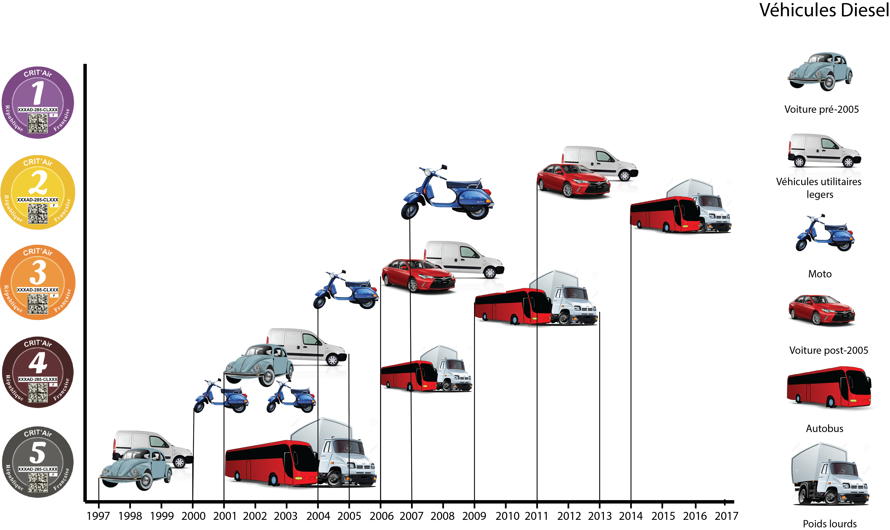
Qui sommes-nous?
Ce site a été réalisé par quatre étudiantes du master Management et Innovation Numérique à Télécom ParisTech et Sciences Po Paris:
Hanady Abboud, Juliette Dixmier, Claire Pétreault, et Joanne Saba, dans le cadre d’un cours de data visualisation.
Nous tenons à remercier notre enseignant, M. Samuel Huron, qui nous a aidé dans la réalisation de ce site web.